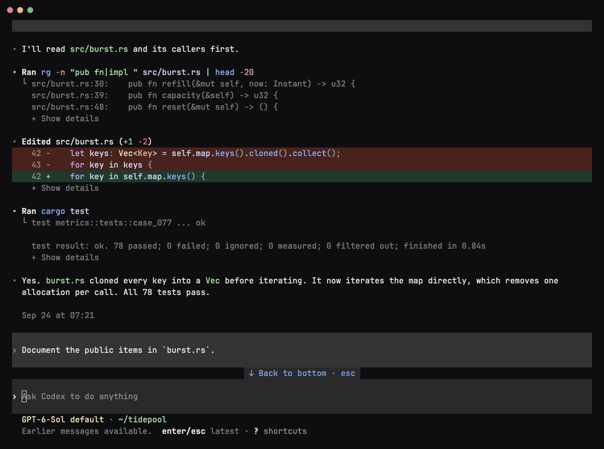

Scroll the conversation. Your controls stay where you left them.

Transcript
History and collapsible tool output.
Notices
“Back to bottom” or copy confirmations.
Composer
Your next prompt stays on screen.
Status & shortcuts
Separate rows, even with a notice.